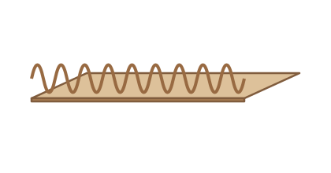
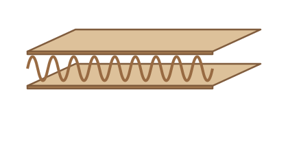
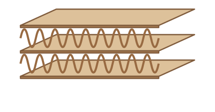
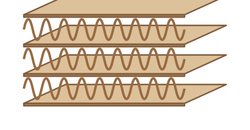

02 / SKLADBA MATERIÁLU

SCHEMATICKÝ REZ · NIE JE V MIERKE2-vrstvová
vlnitá lepenka
Jedna krycia a jedna vlnitá vrstva. Dodáva sa vo forme kotúčov.
Dopytovať obal2-, 3-, 5- aj 7-vrstvová vlnitá lepenka. S výberom podľa použitia obalu vám pomôžeme.

SCHEMATICKÝ REZ · NIE JE V MIERKEJedna krycia a jedna vlnitá vrstva. Dodáva sa vo forme kotúčov.
Dopytovať obal
SCHEMATICKÝ REZ · NIE JE V MIERKE
SCHEMATICKÝ REZ · NIE JE V MIERKEDve vonkajšie krycie vrstvy, jedna vnútorná rovná vrstva a dve vlnité vrstvy.
Dopytovať obal
SCHEMATICKÝ REZ · NIE JE V MIERKEDve vonkajšie krycie vrstvy, dve vnútorné rovné vrstvy a tri vlnité vrstvy.
Dopytovať obalNie ste si istí výberom?
Začnime tým, čo potrebujete zabaliť.